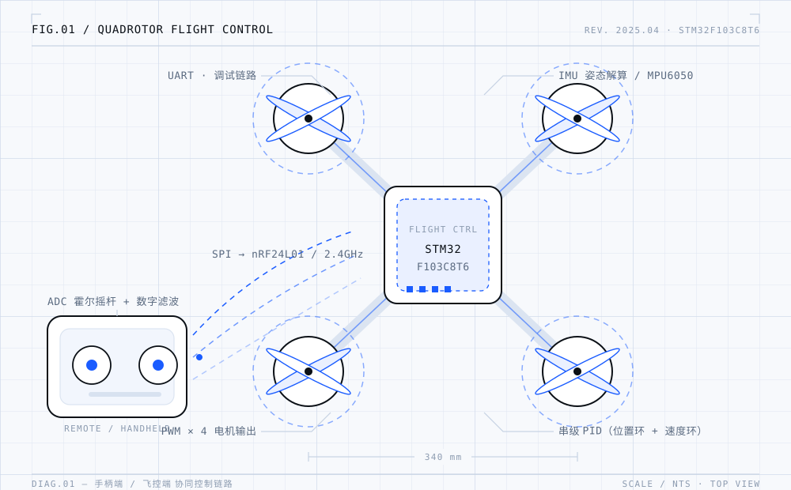
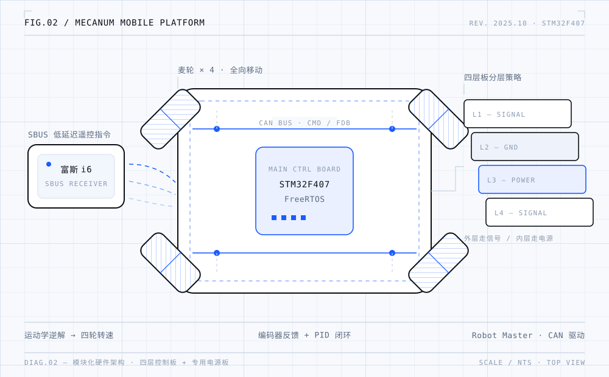
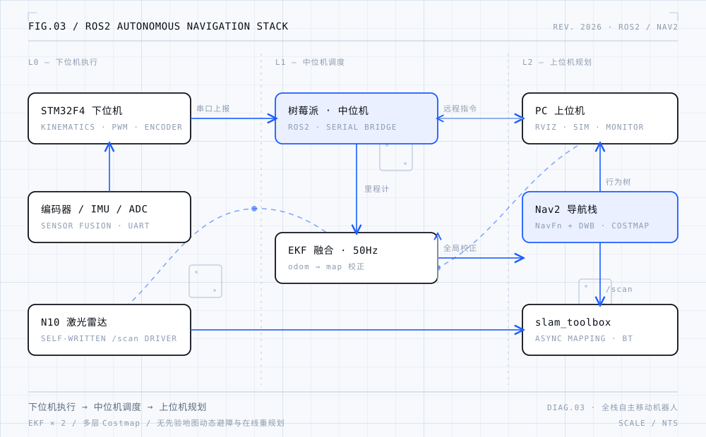
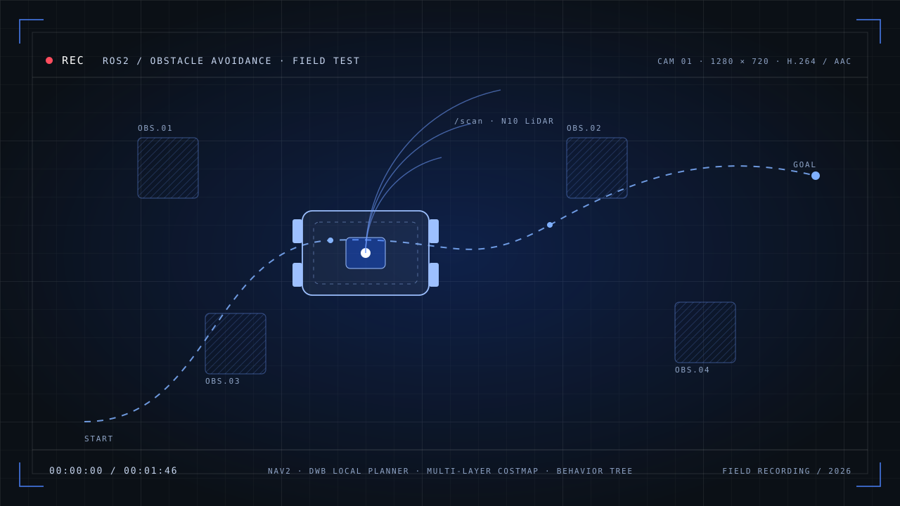

DIAG.01 / TOP VIEW012025.01 — 2025.04
四旋翼无人机
飞控协同系统
STM32F103 · REMOTE + FLIGHT CONTROL
以 STM32F103C8T6 为核心，完成遥控手柄与飞控端的双向协同：ADC 采集霍尔摇杆、SPI 驱动 nRF24L01 2.4GHz 通信，飞控融合 IMU 姿态解算并以串级 PID 实现定高定点悬停。
把复杂系统拆成可落地的模块，再一个一个跑通。
我是一名把「软硬件全链路」当成日常工作方式的开发者。从立创 EDA 画四层板、STM32 裸机驱动，到 FreeRTOS 多任务调度与 ROS2 导航栈——喜欢在一个项目里同时搞定电路、代码和调参。
主修课程：高等数学、电工基础、数字电路、模拟电路、电力电子技术、电器控制系统与可编程控制器、传感器智能检测技术。
具备扎实的嵌入式系统与机器人控制开发经验，熟悉 STM32 F1/F4 全系列平台与 Keil、CubeMX、CubeIDE 工具链；擅长硬件原理图设计与多层板布局，注重信号完整性与电源完整性。善于通过串口、逻辑分析仪定位问题，注重代码规范与文档撰写，乐于团队协作与技术分享。
不是 Demo，是能跑、能调、能复现的完整系统。

DIAG.01 / TOP VIEWSTM32F103 · REMOTE + FLIGHT CONTROL
以 STM32F103C8T6 为核心，完成遥控手柄与飞控端的双向协同：ADC 采集霍尔摇杆、SPI 驱动 nRF24L01 2.4GHz 通信，飞控融合 IMU 姿态解算并以串级 PID 实现定高定点悬停。

DIAG.02 / LAYOUTSTM32F407 · FREERTOS + CAN BUS
模块化硬件架构：四层控制板 + 专用电源板，外层走信号、内层走电源；SBUS 低延迟遥控，FreeRTOS 多任务并发，CAN 总线驱动电机并嵌入 PID 闭环。

DIAG.03 / NODE GRAPHROS2 / NAV2 / SLAM · FULL STACK
独立完成「下位机执行—中位机调度—上位机规划」闭环：两级 EKF 融合定位、slam_toolbox 实时建图、Nav2 全局/局部规划与行为树恢复，并自研 N10 激光雷达驱动。
无先验地图下的动态避障与在线重规划，来自项目 03 的真实跑车录像。

真实跑车导出的曲线与 RViz 画面，不是仿真结果。点击任意图可放大查看。
左：原始 odom 与两级 EKF 的平面轨迹；右：线速度 vx 时序。融合后轨迹漂移收敛，速度噪声尖峰被显著抑制。
以起点—终点标记一次完整往返，记录转向、回环与局部重规划过程中的位姿输出。
激光点云叠加栅格地图，青紫轮廓为障碍物膨胀层，供 Nav2 全局规划与 DWB 局部避障使用。
从底层驱动到上层算法，全链路都能自己接住。
不停在某一层：原理图 → PCB → 驱动 → RTOS → 定位 → 导航，一套系统自己跑通。
SELF-ASSESSED / 自评STM32 F1/F4 裸机与驱动开发，FreeRTOS 任务调度与同步互斥，GPIO / PWM / ADC / UART / SPI / IIC / CAN 全外设链路。
ROS1/ROS2 开发、Nav2 导航框架、slam_toolbox / gmapping 建图、A* / DWA 路径规划，激光雷达驱动包自研。
立创 EDA 独立设计四层 PCB，注重信号完整性与电源完整性；用示波器、万用表、逻辑分析仪定位硬件故障。
PID 串级控制、运动学逆解、EKF 融合编码器 + IMU 输出里程计，抑制累计漂移并优化闭环稳态精度。
工业机器人技术专科背景，系统掌握机器人控制理论；独立完成 ROS2 自主移动机器人平台研发。Linux 系统编程、Git 版本管理与技术文档撰写是日常习惯。